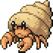

Tap a stage to read its story.
Shellmite wears a smooth sandy spiral shell twice the size of its own soft body, and peeks out with tiny round eyes and one tentative claw. It scoots across the dunes leaving a perfectly straight furrow - it has never learned to curve. When it finds a word written in the sand it traces each letter with its claw before the wind erases it. Guardians say the Sand Dunes remember words because Shellmite writes them twice.
Field note: Shellmite always travels in a straight line; it has never been observed turning voluntarily.
Sand Dunes. Shellmite and its family are found in the Sand Dunes. See everyone who lives there.
Share a Bond Food that matches its types to become friends. Shellmite loves:
A Bond Food is not a trick. It joins your spirit with the Kimuro's spirit, and only when it chooses you.
Print the Kimuro adventure packs: mazes, cards, a board game and Bond Mark medals.
See the printable packs